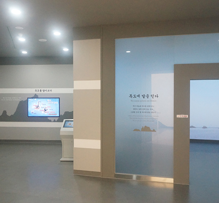
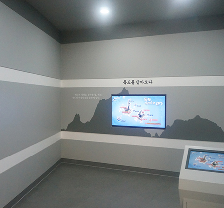
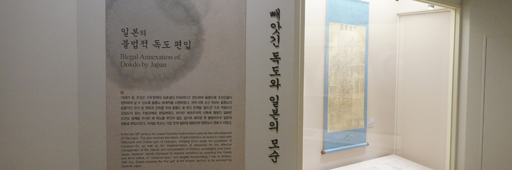
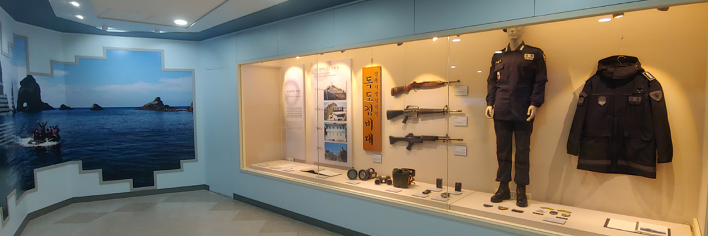

독도 박물관
- KOR
- ENG
팝업
현재팝업번호
전체팝업번호
독도는 역사와 법이 증명한
대한민국의 고유 영토입니다
기록은 변하지 않습니다 독도는 오래전부터 대한민국의 영토였습니다
이야기는 꾸밀 수 있어도
역사는 꾸밀 수 없습니다
독도 역사관 감상하기


PERMANENT EXHIBITION VIEWING
상설 전시 관람
제1 전시관
독도에 발을 딛다
독도선착장에서 바라본 동도와 서도의 모습을 타임랩스 기법으로 담아낸 영상을 통하여 만나볼 수 있습니다.

제1 전시관
독도 담아보기
일반인이 접근하기 힘든 독도 구석구석의 아름다운 풍광을 항공영상 및 360VR 영상을 통해 살펴볼 수 있습니다.

제2 전시관
독도의 역사
512년 우산국의 영토로 한반도의 역사에 편입된 울릉도와 독도는 오늘날까지 우리의 역사 속에서 살아 숨 쉬고 있습니다. 때로는 외세의 침탈과 일본의 불법적인 영유권주장으로 위기를 맞기도 하였지만 정부와 국민들의 단합된 노력으로 오늘날 한국의 영토로 자리매김 할 수 있었습니다. 제 2전시실에서는 이러한 독도의 역사를 만나볼 수 있습니다.

제3 전시관
영토수호의 첨병 독도경비대
독도가 우리의 영토임을 증명하는 가장 중요한 근거는 실효적 지배, 즉 독도를 대한민국 정부가 관리하고 우리 국민이 생활하고 있다는 점입니다. 특히 독도경비대는 일본순시선의 한국 영해 침입을 24시간 감시하며 독도수호의 가장 핵심적인 역할을 하고 있습니다.